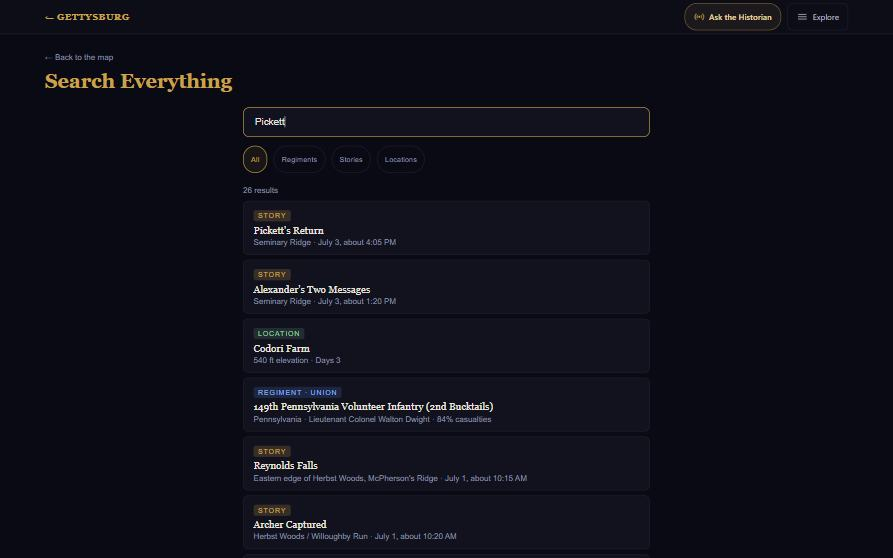
Search Everything
Explore · search.html
Type a regiment, a story or a place. The tabs All, Regiments, Vignettes and Locations narrow the results.
July 1–3, 1863, in 675 moments. How to read the map, move through time and find your way around the site.
This guide describes the site as it stands in October 2026. Names in bold are the labels you see on screen, spelled the way the screen spells them. Numbered markers on the pictures match the numbered lists beside them. Everything here was checked against the running site.
The map replays the Battle of Gettysburg, July 1–3, 1863, as 675 moments. Press play and watch the two armies move, or stop on any moment and look closely.
Open gettysburginteractivemap.com in a current browser. There is nothing to install and no account to create. Phones and touch tablets up to 834 pixels wide get the phone layout (chapter 9); everything else gets the desktop layout, described first.
A welcome window asks how you want to explore. It does not appear again once you have skipped it or finished a path.
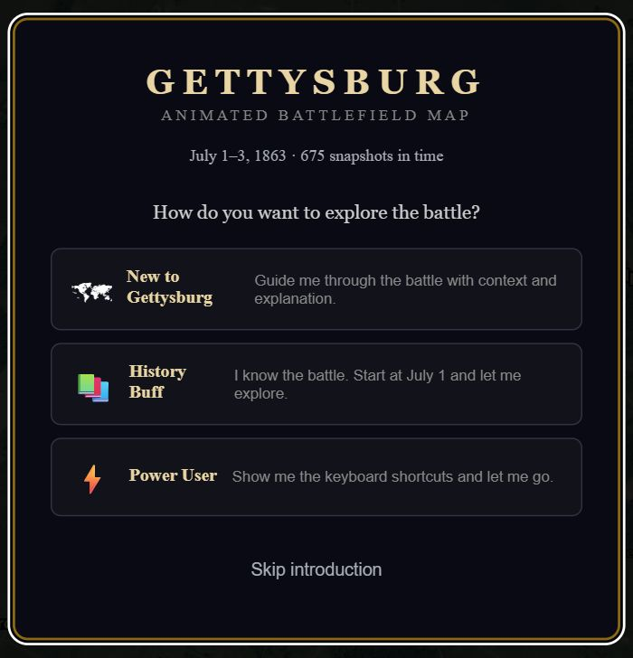
| Choice | What happens |
|---|---|
| New to Gettysburg | A five-step introduction: Dawn on July 1, First Artillery Fire, Reynolds Killed, The Crisis at Little Round Top and Pickett’s Charge. Each step explains what you are looking at and suggests one thing to do. Skip tour leaves it at any point. |
| History Buff | Goes straight to the map at July 1. |
| Power User | Shows the Quick Reference: Space, the arrow keys, 1 2 3, + -, S, F and ?. Start exploring closes it. |
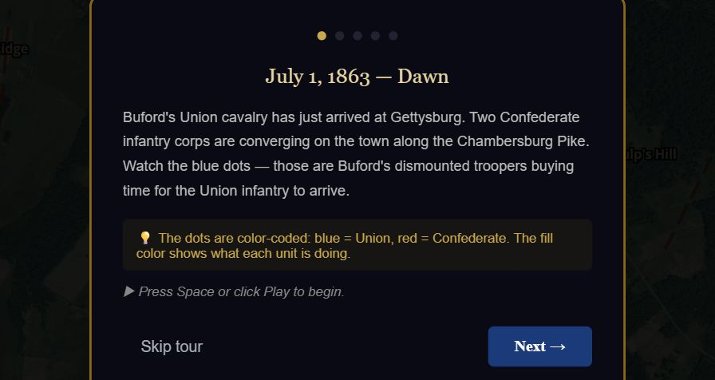
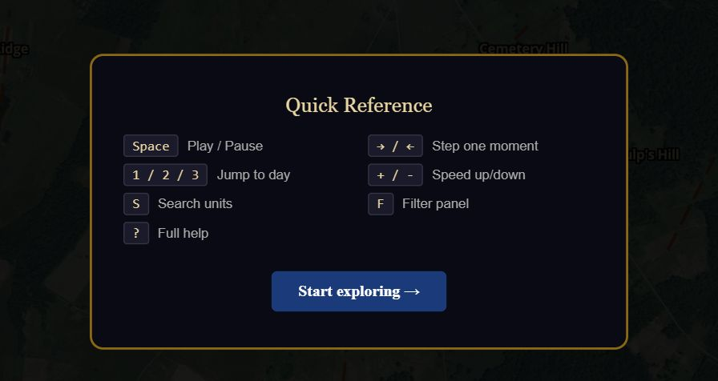
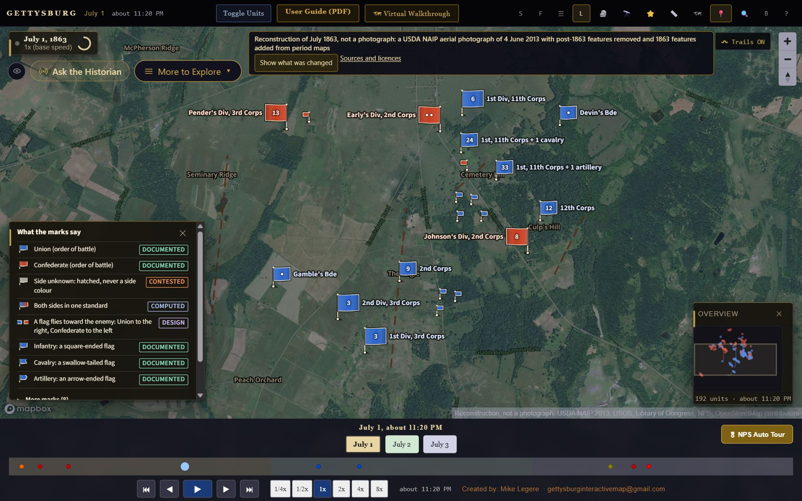
Everything on the map belongs to a moment. The timeline along the bottom of the screen chooses which one, and plays the battle forward from there.
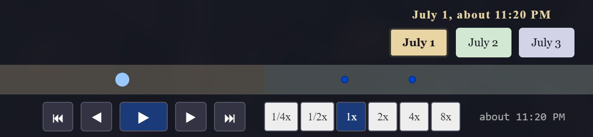
The and buttons move one step at a time, to the next moment of the battle. and move about an hour of battle time. Steps are not all the same length: a step can be a few minutes or much more, so read the clock, not the number of steps.
Click a speed button, or use the keys: + doubles the speed, - halves it and 0 returns to 1x. The keys reach 16 times speed and one quarter speed; the buttons cover 1/4x to 8x. The label at the top left of the map names the speed, for example 1x (base speed) or 8x (fast).
| Key | What it does |
|---|---|
| Time | |
| Space | Play or pause. |
| Forward one step. | |
| Back one step. | |
| Shift + | Forward about one hour of battle time. |
| Shift + | Back about one hour. |
| 1 | Jump to the July 1 tab, about 5:00 AM. |
| 2 | Jump to the July 2 tab, about 4:30 AM. |
| 3 | Jump to the July 3 tab, about 4:15 AM. |
| Speed | |
| - | Slower: halves the speed. |
| + or = | Faster: doubles the speed. |
| 0 | Back to 1x. |
Each regiment, battery and larger formation on the field is a flag on a map of the ground as it was in July 1863. The colour of a flag tells you the side and its shape the arm; a click tells you everything else.
| To | Do this |
|---|---|
| Pan | Press on the map and drag. |
| Zoom | Scroll the wheel over the map, or use the + and – buttons at the top right. The compass button under them turns the map back to face north. |
| Use the keyboard | Press Tab until the map has focus. The arrow keys then pan the map, + and - zoom it, and Shift with the arrow keys rotates and tilts it. Esc hands the keys back to the clock. |
The map is a reconstruction of July 1863, not a photograph of it: a 2013 aerial photograph of the field with later features removed and 1863 features added from period maps. A box at the top of the map says so in every view. Show what was changed colours the parts that were removed, filled, drawn or recoloured, with a key, and Sources and licences opens the credits. The box moves out of the way when a card needs the room.
A unit is a flag on a pole; the foot of the pole is the unit’s place on the ground. Blue is Union and red is Confederate. The shape says the arm: a square-ended flag is infantry, a swallow-tailed flag is cavalry and an arrow-ended flag is artillery. A flag flies toward the enemy, the Union’s to the right and the Confederate’s to the left. A label names the unit, such as 1st Minnesota, or the formation, such as Early’s Div, 2nd Corps. Where several units stand close together they are drawn as one larger flag with a number in it: the number of placement records it stands for, never a count of men. Zoom in, or click it, and it splits. The flags move as the clock runs. A unit that is not on the field at that moment is not drawn.
The legend at the left of the map is called What the marks say. Every row says what a mark means and carries a label for how well that is known: Documented (printed in the order of battle), Modelled (placed by hand, not recorded), Computed (counted by a stated rule), Contested (the records disagree) or Design (drawn to be read). A mark with no record behind it says so in its own label. More marks opens the rest of the rows and How the marks are drawn opens a picture of one flag taken apart.
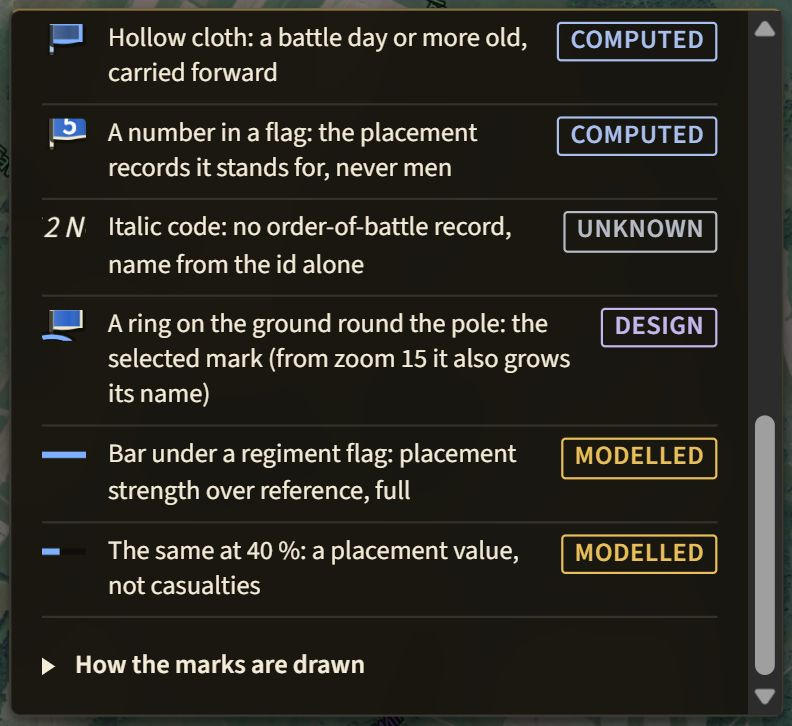
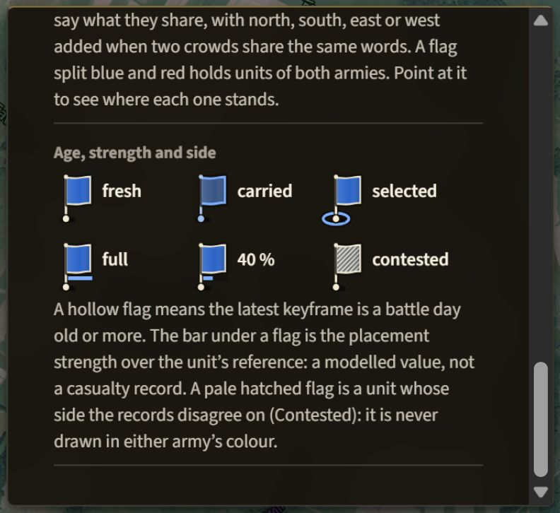
| Mark | Meaning |
|---|---|
| Blue flag | Union, from the order of battle. |
| Red flag | Confederate, from the order of battle. |
| Hatched flag | The side is not known. The flag is hatched and never takes a side colour. |
| Flag in both colours | A crowd of both sides in one mark. |
| Square-ended flag | Infantry. |
| Swallow-tailed flag | Cavalry. |
| Arrow-ended flag | Artillery. |
| Larger standard | A formation record (brigade, division or corps). No arm is claimed. |
| Solid cloth | The latest position on record is under half a battle day old. |
| Hollow cloth | The position is a battle day or more old and is carried forward. |
| A number in a flag | The placement records it stands for, never men. |
| Italic code | No order-of-battle record: the name comes from the unit’s id alone. |
| A ring round the pole | The selected mark. From zoom 15 it also shows its name. |
| A bar under a regiment flag | The strength in the placement record against a reference strength. A bar at 40 % is a recorded value, not a count of casualties. |
Click a unit to open its card at the left of the screen. The card follows the clock: its details change as the unit’s situation changes. Press Esc or the close button to dismiss it.
Rest the pointer on a flag and a small card names the unit and its formation, with the same evidence labels as the legend.
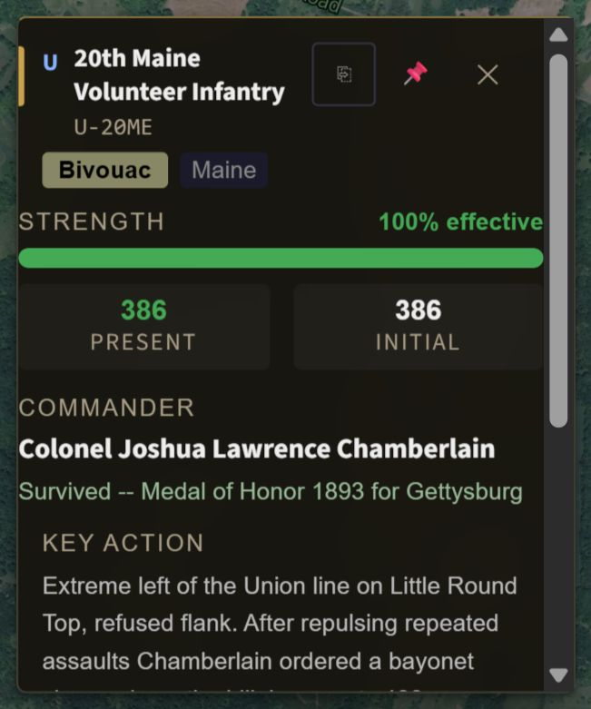
At key moments the map shows cards. A story card tells one episode in a few paragraphs. An event card gives a one-line rating, the time and a summary.
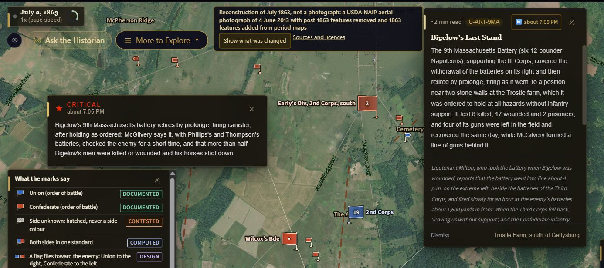
Thirteen buttons at the top right of the screen open the tools of the map. Five of them also answer to a key.
| Button | Key | What it does | |
|---|---|---|---|
| 1 | Search | S | Find a unit by name, state, commander or id. |
| 2 | Filter | F | Show only some sides, unit types, dispositions or strengths. |
| 3 | Unit Roster | none | List every unit with its commander and status. |
| 4 | Legend | L | Show or hide the legend, What the marks say. |
| 5 | Monuments | none | Draws the 512 battlefield monuments and the 20 story stars on the map. Click one for its card. Browse monuments lists them for the keyboard. Press the button again to hide them. |
| 6 | Soldier’s Eye View (Street View) | none | Eight viewpoints that open in Google Street View. |
| 7 | Follow Your Ancestor | none | Follow one regiment through all three days. |
| 8 | Distance Tool | none | Measure the distance between two points on the map. |
| 9 | Map Layers | none | Turn the road and river lines and their names, the breastworks and the farm names on and off. |
| 10 | Locations | none | Show or hide the place-name labels. |
| 11 | Find Unit / Location | none | Opens the same search panel as Search. |
| 12 | Bookmarks | B | Copy a link to this moment, or save it. |
| 13 | Help | ? | Keyboard shortcuts and a short About. |
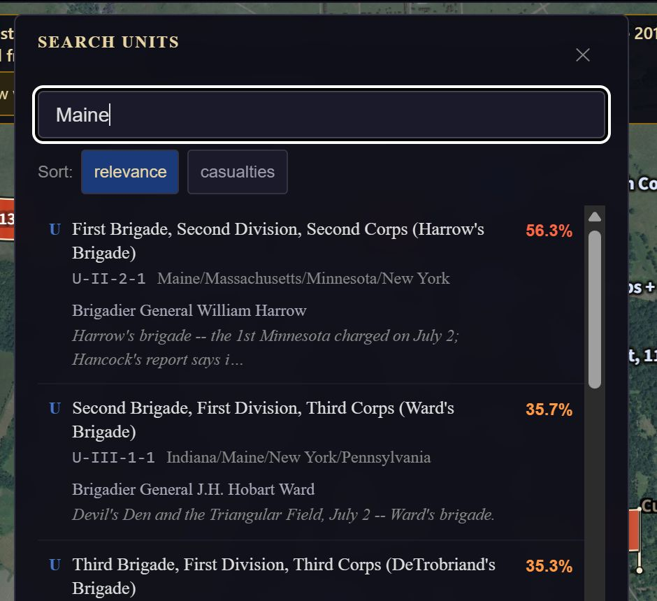
Press S or click Search. Before you type, the panel lists a few notable units: the 20th Maine, 1st Minnesota, Iron Brigade, 26th NC, Cushing’s Battery, Armistead and 15th Alabama. Choose a result and the map moves to that unit and its card opens.
Find Unit / Location opens this same panel.
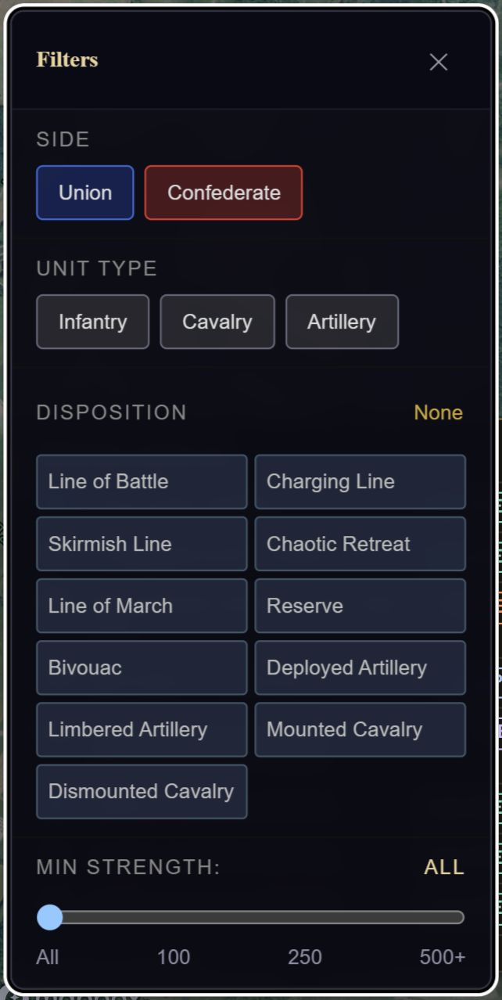
Press F or click Filter. A badge beside the title, such as 1 active, counts the filters in force, and Reset puts everything back. Filtering changes what the map draws; it does not change the clock.
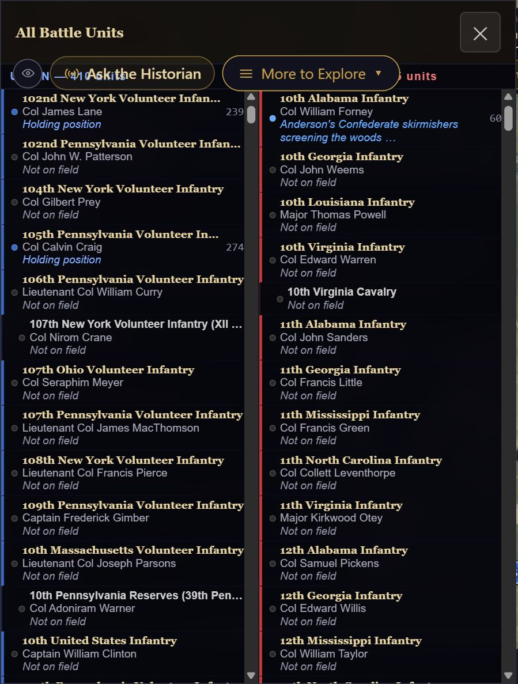
Each row gives a unit’s name and commander. Units on the field at this moment show their status; the others read Not on field. The lists scroll separately.
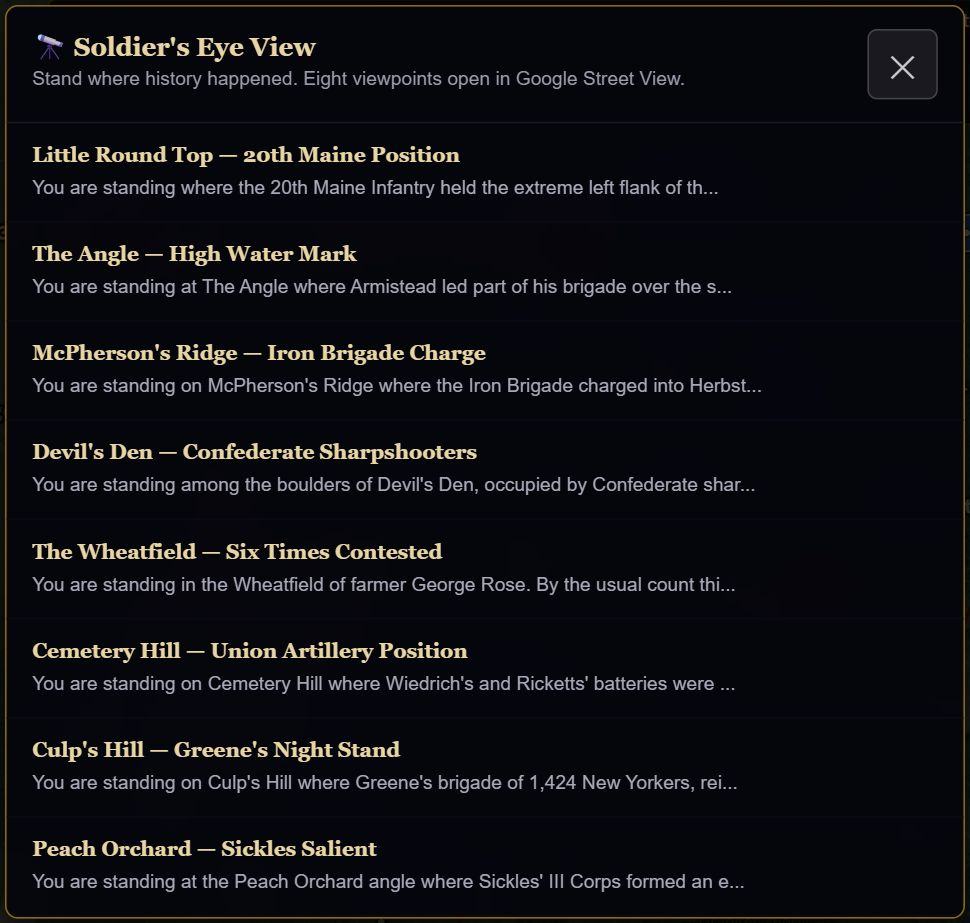
A list of eight places on the field: Little Round Top, The Angle, McPherson’s Ridge, Devil’s Den, the Wheatfield, Cemetery Hill, Culp’s Hill and the Peach Orchard. Each entry opens that spot in Google Street View, so you can stand where the soldiers stood. The viewer is provided by Google.
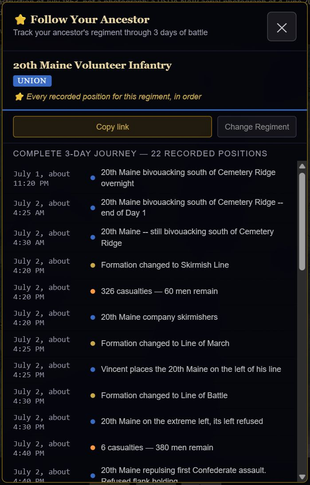
The site lists regiments, not individual soldiers. To find a soldier by name, search the National Park Service’s Soldiers and Sailors System.
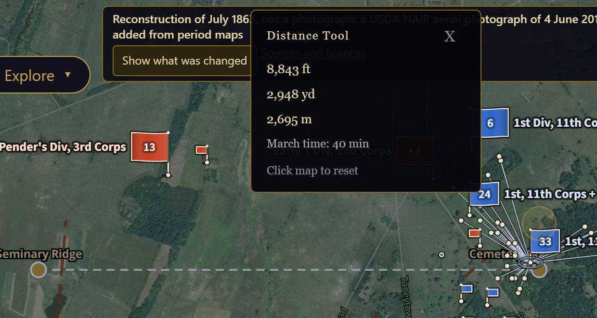
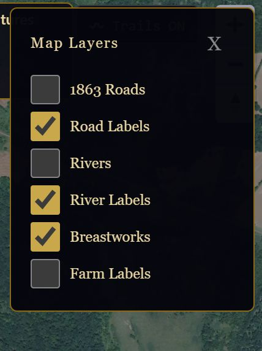
Each check box turns one layer on or off: 1863 Roads, Road Labels, Rivers, River Labels, Breastworks and Farm Labels. Road Labels, River Labels and Breastworks start on; the roads, rivers and farms are already part of the reconstructed ground.
Locations is a single button. It shows or hides the place names such as Seminary Ridge, Cemetery Hill and Culp’s Hill.
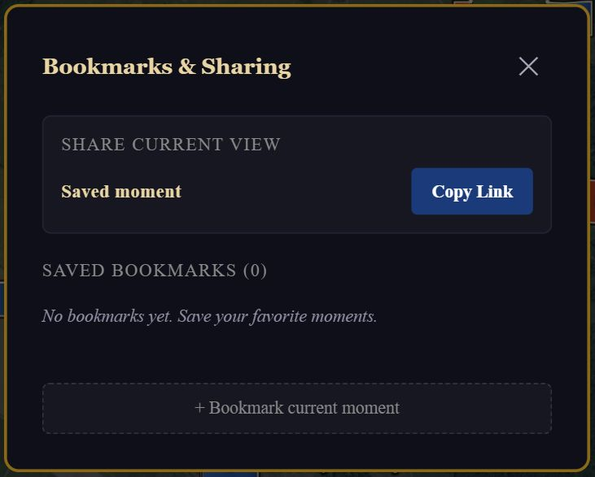
Press B or click Bookmarks. Copy Link copies a link to the moment on screen. + Bookmark current moment asks for a name, with the moment already filled in, and Save adds it to the list of saved bookmarks. See chapter 6 for what a link remembers.
Press ? or click Help. The Keyboard Shortcuts tab lists every key (chapter 8). The About tab names the sources behind the map. Tab stays inside the dialog while it is open, and Esc closes it.
Two ways to see the ground as it is today: a tour of sixteen stops with narration and Street View, and a searchable list of every monument.
Click Virtual Walkthrough in the top bar. The screen changes to a map at the left and a reading panel at the right. Back to the map returns you to the battle.
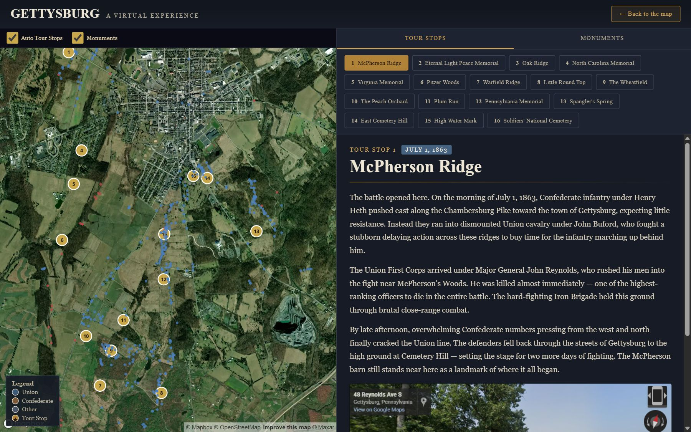
| 1 – 4 | McPherson Ridge · Eternal Light Peace Memorial · Oak Ridge · North Carolina Memorial |
| 5 – 8 | Virginia Memorial · Pitzer Woods · Warfield Ridge · Little Round Top |
| 9 – 12 | The Wheatfield · The Peach Orchard · Plum Run · Pennsylvania Memorial |
| 13 – 16 | Spangler’s Spring · East Cemetery Hill · High Water Mark · Soldiers’ National Cemetery |
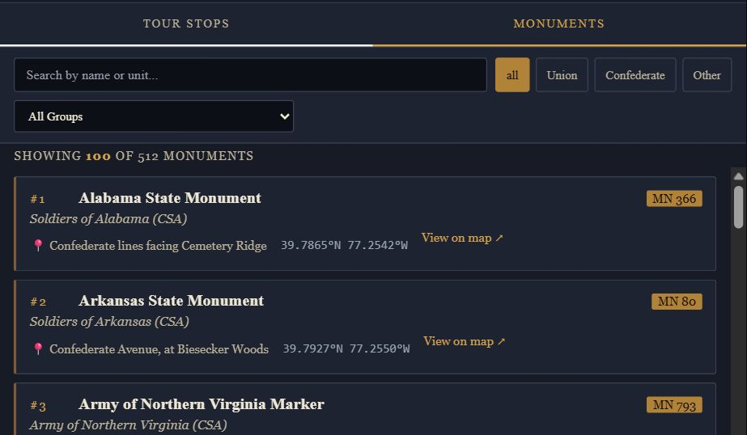
The list shows the first 100 matches at a time. Each entry gives the monument’s name, its number, who it honours, where it stands, its latitude and longitude and a View on map link.
The NPS Auto Tour button at the bottom right of the battle map starts the same sixteen stops over the live map. The map moves to each stop and the clock moves to the stop’s moment. Press Esc to leave the tour.
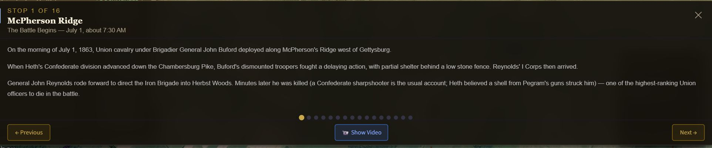
Every view of the map can be put in a link. Send it to someone and they open the same moment, the same unit and the same view.
A link is the address of the map followed by a question mark and one or more settings joined with &. The map reads them when it opens. A setting it cannot use is ignored, and the map opens in its usual place instead.
| Setting | Meaning |
|---|---|
tick or t | A moment from 1 to 675. If you give both tick and day, tick wins. |
day | 1, 2 or 3: the first moment of that day. |
unit or u | A unit id such as U-1MN. The unit is selected and its card is pinned. |
vignette or v | A story id. The map moves to the moment of that story. Used only when there is no valid tick or day. |
ancestor | A regiment id. Opens Follow Your Ancestor on that regiment. |
z | Zoom, kept between 11 and 18. |
ll | Map centre as latitude,longitude, for example 39.8112,-77.2260. Accepted only inside the battlefield. lat and lng work in place of ll. |
layout | mobile or desktop: forces the phone or the desktop layout. |
| Add this to the address | To open |
|---|---|
?day=2 | the start of July 2. |
?tick=538 | July 3 at about 3:00 PM. |
?unit=U-1MN&tick=538 | July 3 at about 3:00 PM with the 1st Minnesota selected. |
?vignette=V-017 | the moment of the story The Cannonade. |
?ancestor=U-20ME | Follow Your Ancestor on the 20th Maine. |
?z=15&ll=39.8112,-77.2260 | the map at zoom 15, centred on that point. |
Beyond the map, the site has nineteen pages for searching, reading, researching and sharing. They all open from two buttons at the left of the map, under the day and the time.
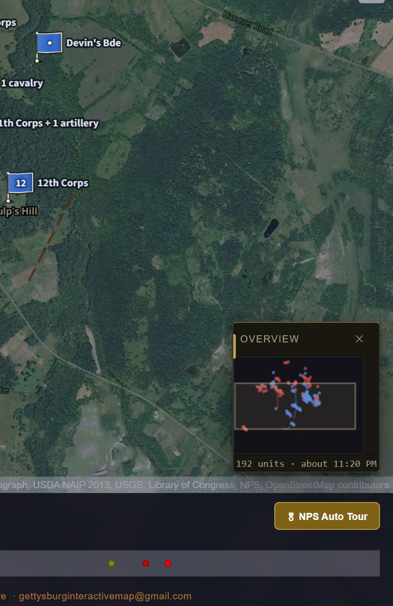
Click More to Explore. The menu groups the pages by what you want to do. Click a page to open it in the same window; every page has a Back to the map link.
Guide and Units appears at the foot of the menu on a narrow window, where User Guide (PDF) and Toggle Units no longer fit in the top bar. On a wide window they stay in the top bar and the group is not shown.
At the foot of each page are links to Privacy, Terms, Contact and User Guide (PDF).

Type a regiment, a story or a place. The tabs All, Regiments, Vignettes and Locations narrow the results.
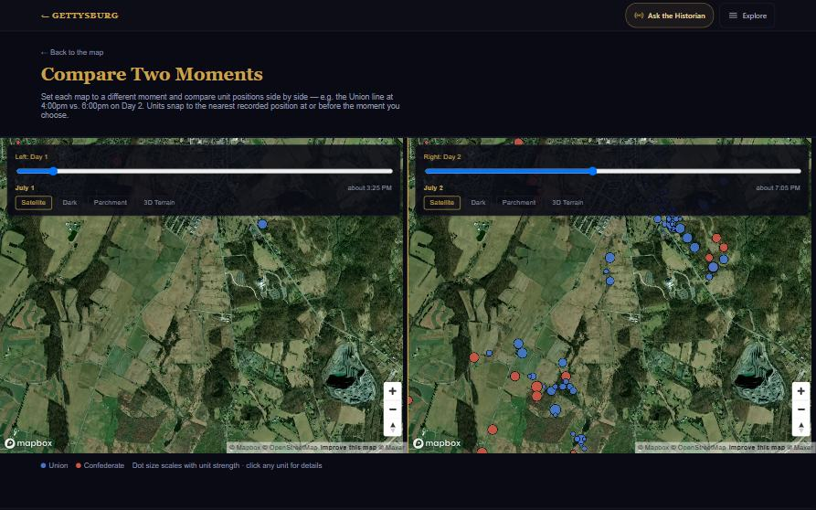
Two maps side by side, each with its own slider and its own style: Satellite, Dark, Parchment or 3D Terrain. Compare the Union line at 4:00 PM with the same line at 6:00 PM.
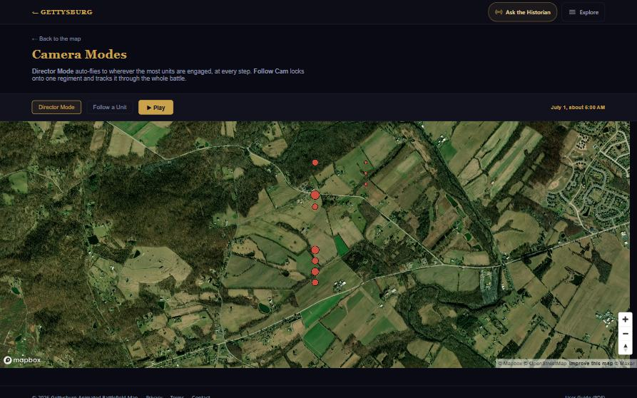
Director Mode flies the camera to wherever the most units are engaged. Follow a Unit locks onto one regiment and tracks it through the battle.
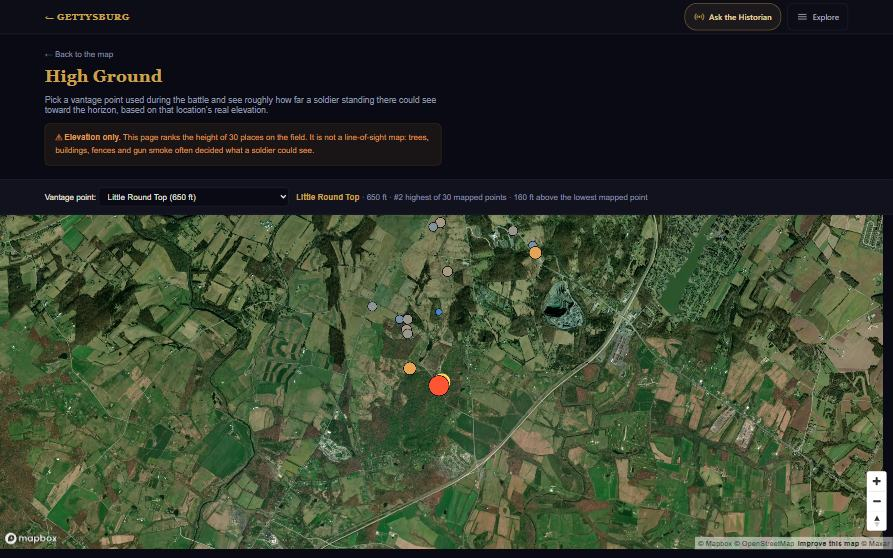
Pick one of thirty places from the list, from Big Round Top (785 ft) down, and see its height. It ranks elevation only; trees, buildings and smoke often decided what a soldier could see.
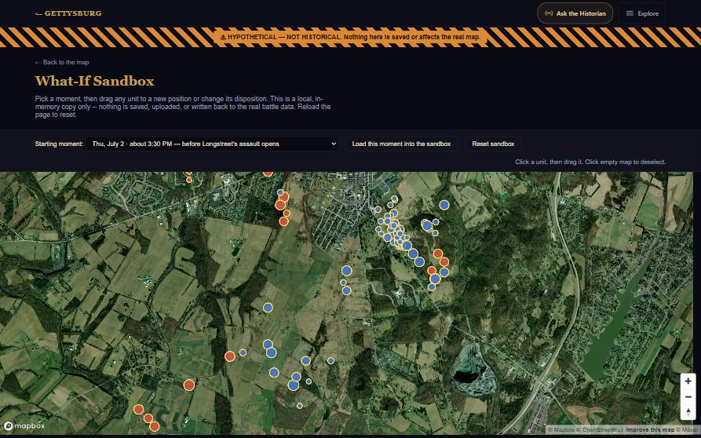
Pick a starting moment, load it, then drag units and change their status. It is hypothetical and not history. Nothing is saved, and reloading resets it.
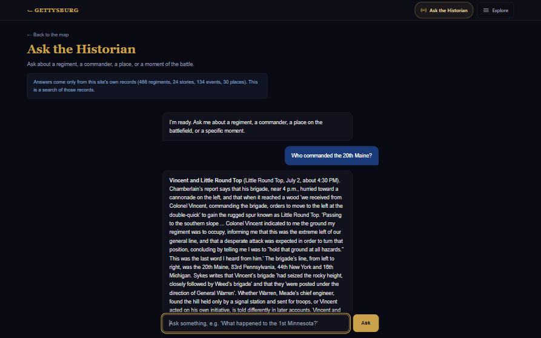
Type a question about a regiment, a commander, a place or a moment, or choose a suggestion such as 20th Maine or Pickett’s Charge, then press Ask. Answers come only from this site’s own records.
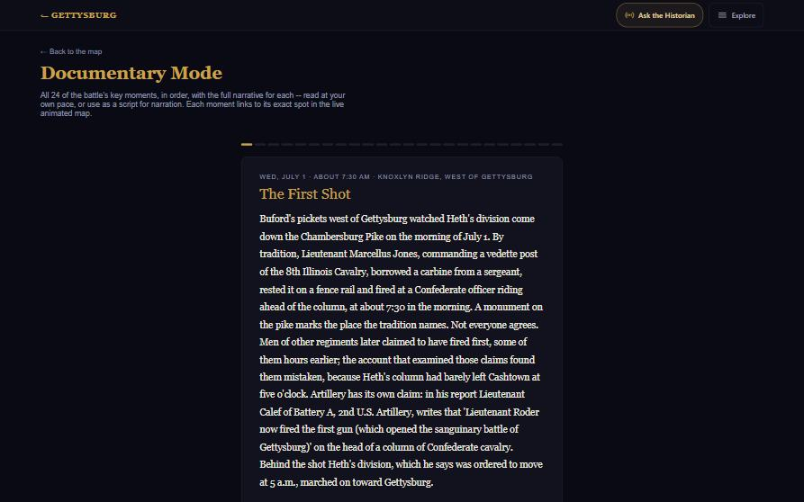
All 24 key moments of the battle in order, each with its full account and a link to its place on the map. Previous and Next move between them.
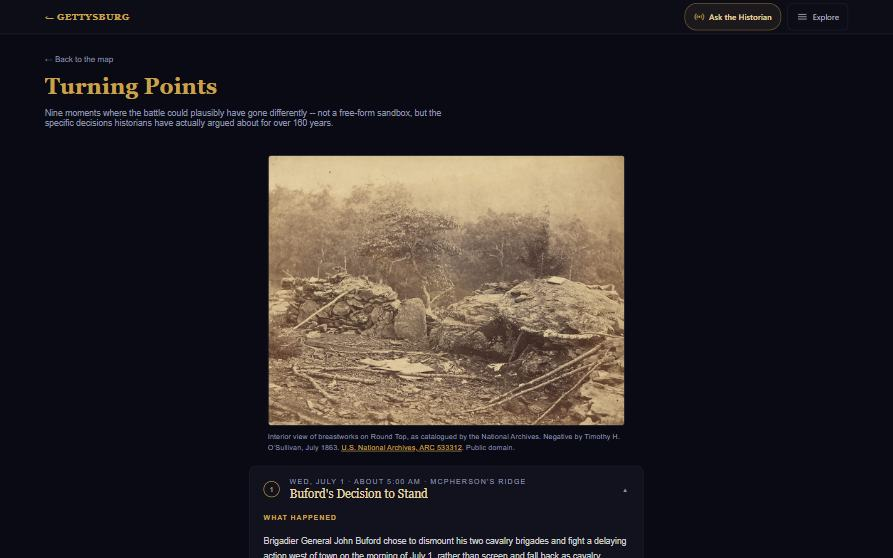
Nine numbered decisions where the battle could have gone differently. Click one to open what happened and how historians have argued it.
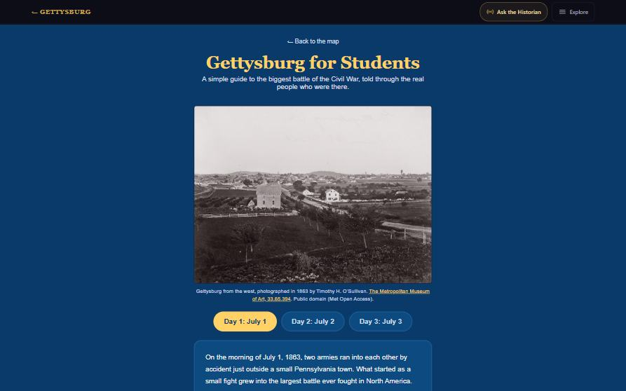
A short guide to the battle in three tabs, Day 1: July 1, Day 2: July 2 and Day 3: July 3, told through the people who were there.
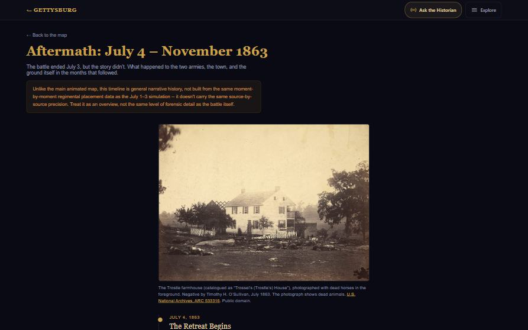
What happened to the two armies, the town and the ground from July 4 to November 1863. It is an overview, not built from the unit-by-unit records of the map.
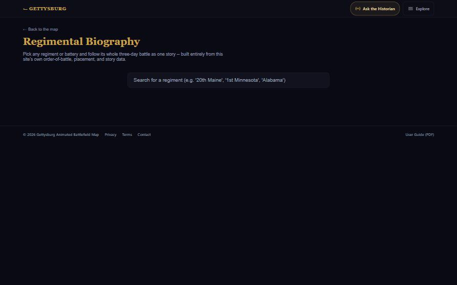
Search for a regiment or battery and read its three days as one story.
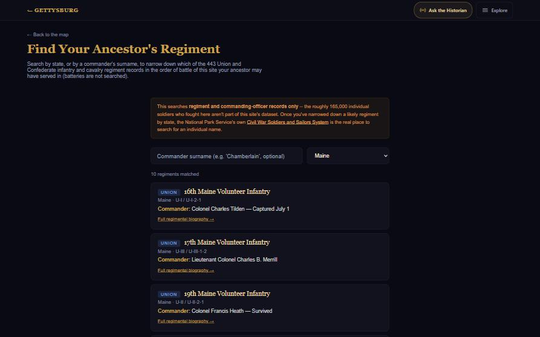
Choose a state, or type a commander’s surname, to narrow down the regiments an ancestor may have served in. It lists regiments, not individual soldiers.
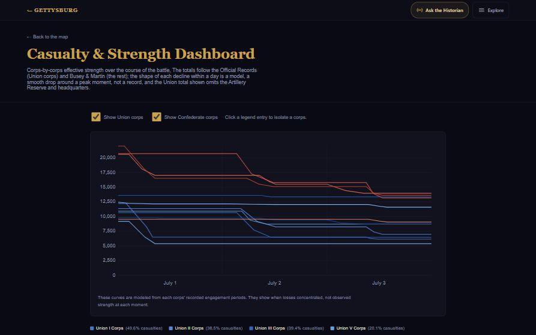
Corps-by-corps strength across the three days. Switch Union or Confederate corps on and off, or click a legend entry to isolate one corps. The curves are modelled from each corps’ recorded engagement periods.
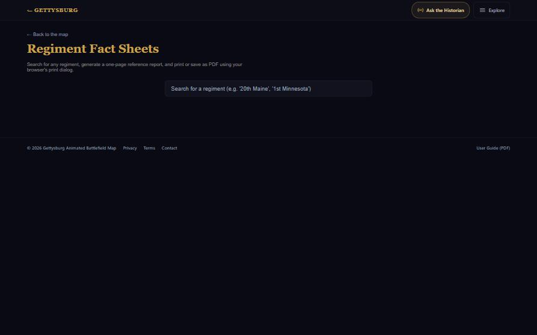
Search for a regiment and make a one-page fact sheet. Print it, or save it as a PDF with your browser’s print dialog.
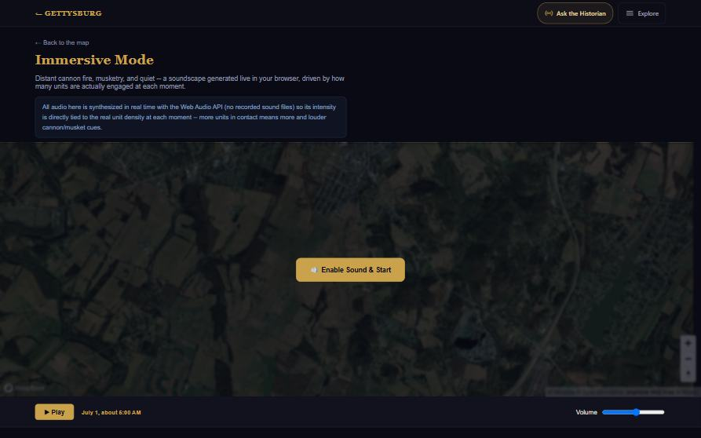
A soundscape made in your browser that follows how many units are engaged at each moment. You turn the sound on yourself with Enable Sound & Start, and set the Volume.
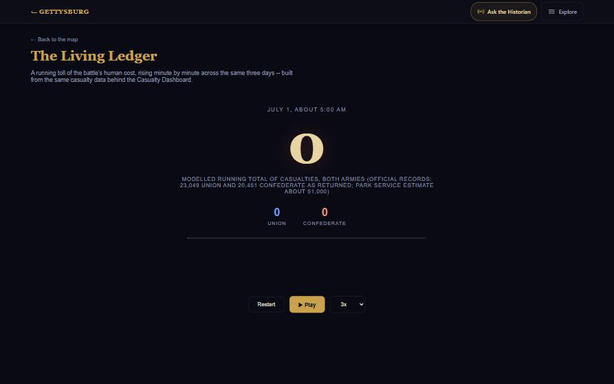
A running total of casualties, split into Union and Confederate, climbing across the three days. Play, Restart, and choose 1x, 3x or 10x.
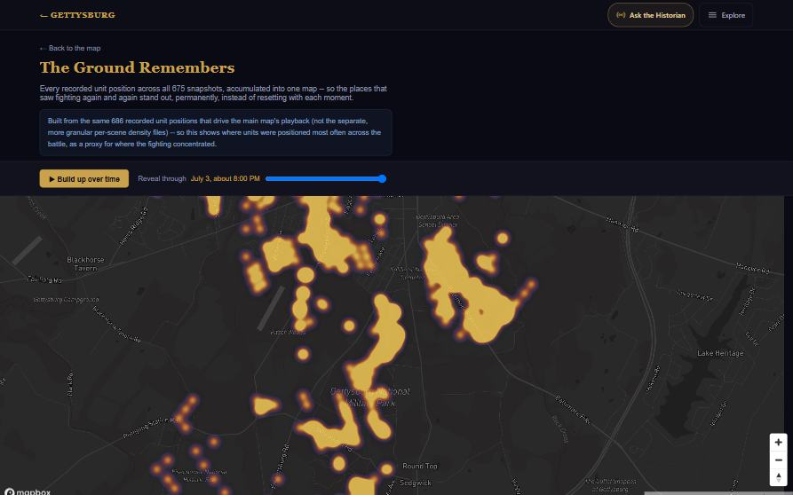
Every recorded unit position, accumulated on one map, so the places where units stood most often stand out. Build up over time replays it; the slider reveals it through any moment.
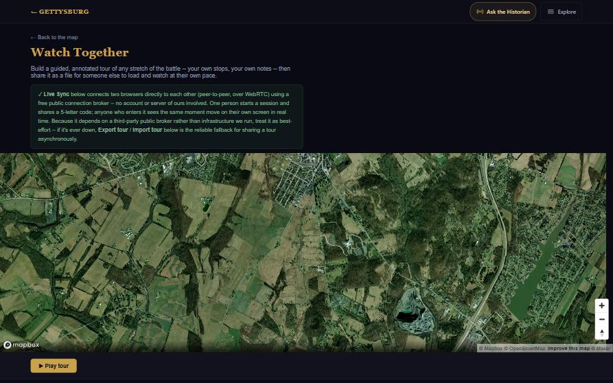
Build a guided tour with your own stops and notes and share it as a file with Export tour. Start a live session shares a five-letter code so a second browser follows along; it can be unavailable, and exporting always works.
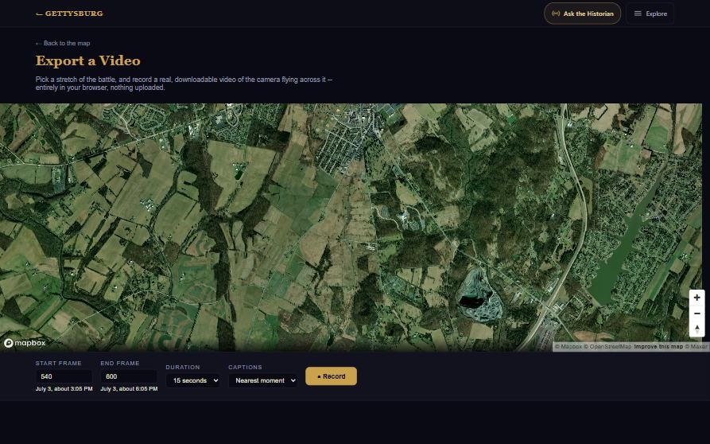
Choose a start and end moment, a length of 8, 15 or 30 seconds and caption settings, then Record a video of the camera flying across that stretch. It is made in your browser and nothing is uploaded.
The whole map can be driven from the keyboard, and each control has a name that a screen reader can announce.
| Key | What it does |
|---|---|
| Time | |
| Space | Play or pause. With a button focused, Space presses that button instead. |
| Forward one step. | |
| Back one step. | |
| Shift + | Forward about one hour of battle time. |
| Shift + | Back about one hour. |
| 1 | Jump to the July 1 tab, about 5:00 AM. |
| 2 | Jump to the July 2 tab, about 4:30 AM. |
| 3 | Jump to the July 3 tab, about 4:15 AM. |
| Speed | |
| - | Slower. |
| + or = | Faster. |
| 0 | Back to 1x. |
| Map | |
| Scroll | Zoom in and out. |
| Drag | Pan the map. Pressing on the map hands the keyboard back to the page, so the time keys keep working. |
| Tab | Move focus to the map. Then the arrow keys pan, + and - zoom, and Shift with the arrow keys rotates and tilts. |
| Esc | Closes the open panel or card and clears the selected unit. With several things open it closes the topmost first. |
| Panels | |
| F | Filter panel. |
| S | Unit search. |
| B | Bookmarks. |
| L | Legend. |
| M | Overview map. |
| ? | Help. |
On phones and touch tablets up to 834 pixels wide, the map opens in a layout built for one hand: the clock at the top, the map in the middle and the controls at the bottom.
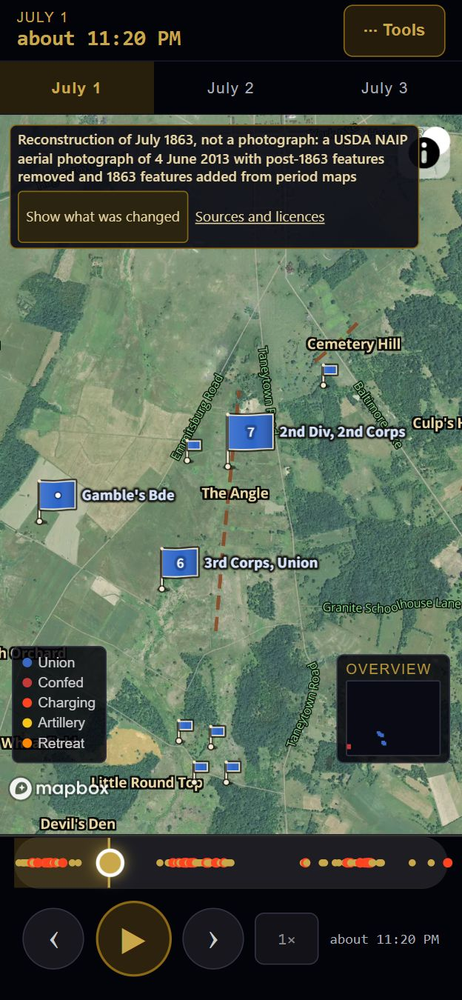
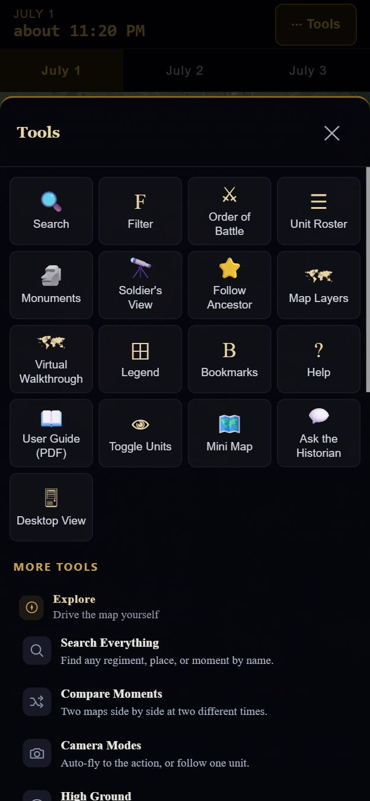
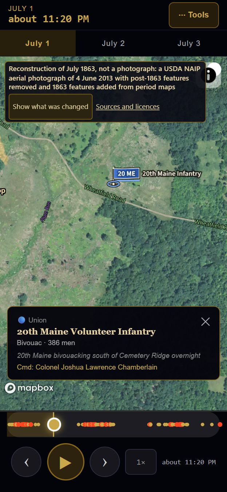
The Tools sheet holds Search, Filter, Order of Battle, Unit Roster, Monuments, Soldier’s View, Follow Ancestor, Map Layers, Virtual Walkthrough, Legend, Bookmarks, Help, User Guide (PDF), Toggle Units, Mini Map, Ask the Historian and Desktop View.
| Gesture | Result |
|---|---|
| Drag | Pan the map with one finger. |
| Pinch | Zoom in or out with two fingers. |
| Tap a unit | Show its details. |
| button | Play or pause. |
| Step buttons | Step back or forward by one step. |
| Timeline | Drag the handle to move through July 1–3. |
| Speed button | Change the playback speed. |
| July 1, July 2, July 3 | Jump to the start of that day. |
The Tools sheet has a Desktop View button that switches to the desktop layout. On the desktop layout, add ?layout=mobile to the address to try the phone layout.
Below the buttons, More Tools lists the other pages of the site, grouped as in chapter 7.
A few notes on how to read the map, and on places where this release differs from what its labels suggest.
Found something wrong, or something missing? Write to gettysburginteractivemap@gmail.com and say which page and which moment you were on.
The map is at gettysburginteractivemap.com. A copy of this guide is always at gettysburginteractivemap.com/user-guide.pdf.
Map data © Mapbox, © OpenStreetMap contributors. Imagery © Maxar. Street View is provided by Google. This guide describes the Gettysburg Interactive Map as of October 2026.